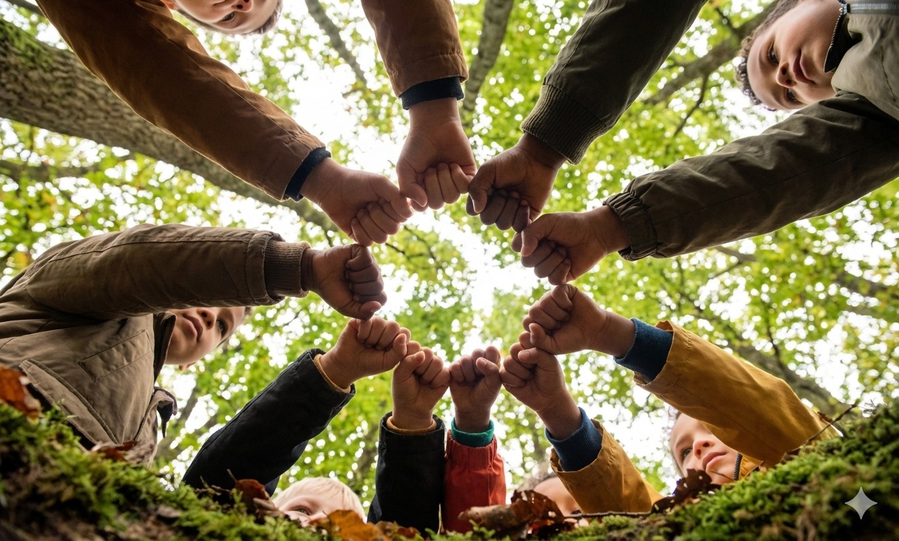

Annamme lapsille enemmän sitä, mikä on todella tärkeää: kiireetöntä aikaa, aitoa yhteyttä ja vapauden kasvaa.
Tehtävämme on tuoda ihmiset yhteen puolustamaan terveempää ja onnellisempaa lapsuutta.
Smartphone Free Childhood ei tarkoita teknologian kieltämistä, vaan sitä, että annamme lapsille enemmän sitä, mikä on todella tärkeää: kiireetöntä aikaa, aitoa yhteyttä ja vapauden kasvaa, tutkia ja olla vain lapsia.
Olemme kasvava liike vanhempia, jotka päättävät viivästyttää älypuhelinten ja sosiaalisen median käyttöä lapsillaan — sekä perheitä, jotka ovat jo antaneet lapselle älypuhelimet, mutta haluavat muutosta, uutta ajattelua tai vaihtoehtoisen tien eteenpäin. Kaikenlaiset perheet taustoista ja lähtökohdista riippumatta ovat tervetulleita tähän yhteisöön.
Autamme perheitä tekemään valinnan yhdessä — rakentamalla yhteisöä, jakamalla ideoita ja resursseja sekä tarjoamalla tukea, joka muistuttaa meitä siitä, ettemme ole yksin. Muutos tapahtuu askel askeleelta: kotona käytävissä keskusteluissa, kouluissa luomissamme normeissa ja rohkeudessa valita se, mikä on oikein, sen sijaan mikä on helppoa.
Liity mukaan. Tuo ryhmään äänesi, toivosi ja muutoshalusi. Yhdessä voimme antaa lapsillemme maailman, jonka he ansaitsevat.
Emme ole yksin. Samankaltaisia Smartphone Free Childhood -ryhmiä on käynnistetty 18 maassa ympäri maailmaa.
Älypuhelinten ja sosiaalisen median ongelmat
Sovellukset on suunniteltu pitämään lapset koukussa, hyödyntäen heidän kehittyviä aivojaan.
Altistuminen sopimattomalle, väkivaltaiselle tai häiritsevälle sisällölle on yleistä.
Yhteyksiä ahdistukseen, masennukseen ja kehonkuvaongelmiin nuorilla.
Vaikuttaa keskittymiskykyyn ja häiritsee oppimista luokkahuoneissa.
Vähentää kasvokkain tapahtuvaa vuorovaikutusta ja laatuaikaa kotona.
24/7 altistuminen kiusaamiselle ilman turvapaikkaa.
Sininen valo ja ilmoitukset häiritsevät elintärkeitä unirytmejä.
Riski joutua verkkosaalistajien ja hyväksikäytön uhriksi.
Sosiaalinen media ja älypuhelinten käyttö ovat juurtuneet syvälle monien suomalaisten lasten ja nuorten arkeen. Merkittävällä osalla nuorista ja aikuisista päivittäinen käyttö on runsasta (useita tunteja), ja osalla käyttö on niin runsasta, että se voi olla ongelmallista — liittyen mielenterveys- ja hyvinvointiongelmiin, oppimisvaikeuksiin ja sosiaalisiin riskeihin. Nuoremmat lapsetkaan eivät ole suojassa: kyselytutkimusten mukaan jopa alakouluikäisistä osa raportoi ongelmallisesta digilaitteiden käytöstä.
Näiden riskien seurauksena vanhempien, kasvattajien ja päättäjien keskuudessa on herännyt tietoisuus tarpeesta tasapainottaa digitaalista mediaa terveellisten tottumusten — kuten unen, liikunnan, kasvokkain tapahtuvan vuorovaikutuksen ja valvotun verkkoturvallisuuden — kanssa. Esimerkiksi koulut ympäri Suomea pohtivat nyt, miten puhelinikielto toteutetaan käytännössä koulupäivän aikana.
”Ja suomalaisista nuorista 50 prosenttia kertoo olevansa netissä silloinkin, kun ei halua. Ne on mun mielestä aika sellaisia hätähuutoja, että meidän aikuisten aika olisi kantaa vastuu”
Emme ole teknologiavastaisia, olemme lapsuusmyönteisiä. Haluamme lasten kasvavan itsevarmasti käyttämään teknologiaa, ei tulevan riippuvaiseksi siitä. Siksi uskomme digitaalisten taitojen rakentamiseen vähitellen ja tarkoituksella, sekä siihen, että annamme lapsille enemmän aikaa olla lapsia ennen kuin he ovat jatkuvasti verkossa. SFC:ssä on kyse tasapainosta, ei kielloista.
Mitä kauemmin odotamme älypuhelimen antamista lapsillemme, sitä enemmän aikaa heillä on oppia, kasvaa ja kehittyä erossa koukuttavista algoritmeista ja sosiaalisen median ahdistuskoneistosta.
Siksi sanomme: odota, odota, odota.

Vaadimme sosiaalisen median ikärajaa Suomeen. Allekirjoita vetoomus ja auta meitä suojelemaan lapsia ja nuoria sosiaalisen median haitoilta.
Järjestämme ilmaisia yhteisönäytöksiä elokuvasta Can’t Look Away.
Katso elokuva verkossa:
JOLT - Can’t Look AwayLiity muiden vanhempien seuraan WhatsApp- ja Facebook-yhteisöissämme.
Keskeiset tutkimukset ja tiedot älypuhelinten ja sosiaalisen median vaikutuksista.
Oppaat keskustelun avaamiseen.
Mitä jos lapsellasi on jo älypuhelin?
Hyödyllisiä linkkejä ja kumppaneita.
Suositeltavaa luettavaa ruutuajasta ja lapsuudesta.
Pohjia koulujen ja päättäjien kontaktointiin.
Mielenkiintoisia artikkeleita aiheesta.